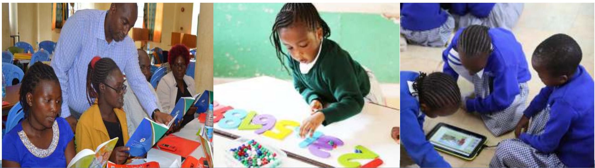

STRAND 5.0: PROFESSIONAL DOCUMENTS
Keys areas to be covered
- Schemes of work
- Lesson plan
- Records of work covered
- Learner's progressive records
- Individualized Developmental Program
- Attendance register
Kenya Institute of Curriculum Development
Professional Documents
Session Outcomes
By the end of the session, the participant should be able to:
- identify different professional documents used by the teacher;
- develop schemes of work as a professional document to implement CBC;
- appreciate use of schemes of work in the implementation of CBC
Detailed Professional Documents
Introduction
- Professional documents are official documents developed to make learning efficient and effective as the teacher implements the Curriculum.
- Their development is guided by the curriculum designs and this enhances the teacher's understanding of the designs.
- It is important for teachers to prepare and use the professional documents in their day-to-day teaching,
- They lay the foundation for sound administration, planning, evaluation and monitoring of curriculum delivery.
Professional documents
- Scheme of work
- Lesson plan
- Record of work
- Progress record
- Individualized Education Programme (IEP)
Scheme of work
- Developed from the curriculum designs
- Plan of how learning shall be organised within the allocated time.
- Allows the teacher to manage the time appropriately
- All aspects of the learning process are thought through well in advance
Components
- Administrative details
- Week
- Lesson
- Strand
- Sub strand
CONT.
- Specific Learning Outcomes
- Learning Experiences
- Key Inquiry Questions
- Learning Resources
- Assessment
- Reflection
Scheme of work template
School, Grade. Learning area, Term, Year
| Week | Lesson | Strand | Sub strand | Specific learning outcome | Learning experiences | KIQ | Learning resources | Assessment | Reflection |
|---|---|---|---|---|---|---|---|---|---|
Assignment
Using the curriculum designs
- Develop a scheme of work for one week in the learning area
- From the scheme of work develop a lesson plan
- In pairs, critique the scheme of work and lesson plan developed
Lesson Plan
- A lesson plan is a breakdown of the scheme of work into teachable units
- It shows what needs to be accomplished within the time allocated for the lesson.
- It enables the teacher to contextualize the lesson activities at a glance.
- The teacher is advised to adopt inquiry-based learning techniques when planning, since they are learner centered and key to success in implementing the competency-based learning.
FACTORS TO CONSIDER WHEN DEVELOPING A LESSON PLAN
| 1) The specific learning outcome(s) | 7) Values |
| 2) Learning experiences: how the specific | 8) PCls |
| learning outcome(s) will be achieved | 9) Links to other subjects |
| 3) Key Inquiry Question(s) | 10) Community Service Learning |
| 4) Integration of ICT in the lesson plan | 11) Non- Formal Activities |
| 5) Learning Resources | 12) Assessment: a way of measuring how |
| 6) Core competences | well the outcome was attained; test, worksheet and homework among others |
Important!
- Establish the learning outcomes to be achieved: identify the outcomes to be achieved through the lesson you plan to teach
- Consider the learners' ability, background and learning approach to use among others
- Ensure the availability of relevant and appropriate materials for the lesson
- Determine appropriate assessment methods to use
Components of a Lesson Plan
- Administrative details
- Strand
- Sub strand:
- Specific Learning Outcomes
- Key Inquiry Question
- Learning Resources
- Organization of learning
- Introduction
- Lesson development
- Step 1
- Step 2
- Step 3:
- Extended Activity
- Conclusion
- Reflection on the lesson
Assignment
- In groups develop a lesson plan from the schemes of work developed earlier and present in plenary.
- Discuss the components of a record of work
- In groups prepare a record of work and report in plenary
- In groups, to discuss the components of a progress of work record as an extended activity
Record of work covered
Provides evidence of work covered by the teacher
Components
- Administrative details
- Time frame
- Lesson
- Work done
- Reflection
- Signature
A record of work should have the following:
Administrative Details:
School: Bidii Moja Primary School
Grade: 4
Learning Area: Home Science
Strand: Clothing
Sub strand: Needlework Tools
Name of Teacher: Gift Zuru
| DATE | LESSON | WORK DONE | REFLECTION | SIGN |
|---|---|---|---|---|
| 7/12/2020 | Identify various tools used in needlework | Identification of various tools used in needlework | ||
| 9/12/2020 | Identify various tools used in needlework | Draw, colour and name basic needlework tools used in sewing | ||
| 11/12/2020 | a) Use basic needlework tools in sewing b) practice safety while using the needlework tools |
a) Safely using basic needlework tools in sewing b) practice on safety while using the needlework tools |
IMPORTANCE OF RECORDS OF WORK
- Good recordkeeping can help to find the information that the teacher may need.
- lt promotes the creation of full and accurate records
- lt also involves storing and managing records appropriately so that the information will be available when needed.
- Olt helps the authorities to know what is being taught in school, and shows how and when work is done.
- Ensures: accountability and transparency of work covered by the teacher.
IMPORTANCE OF RECORDS OF WORK
- Provides continuity of teaching of a particular class. that a new teacher traces where to start teaching a class.
- alt allows both teacher and the student to reassess the teaching-learning relationship.
- Helps to identify the learner who needs more help, guidance and support and helps them understand what they need to do next to improve their work.
- Effectively monitor the progress of the teacher and the learners, for planning and decision making
Learner's progress record
- Record the learner progress over time
- An analysis of this will show what progress the learner is making
- Takes different formats depending on the type of assessment
Learner's progress record Cont,d
- A Learner progress record is made up of a learner's academic achievements, skills and abilities and school reports.
- Any other relevant information could also be included.
- The progress record documents the learner's academic performance on a weekly, monthly or termly basis. It helps to monitor learners' progress and performance.
- In addition to providing teachers with a tool to record learner assessment data or observations, the Learner Progress
- Record may be used to form groups for differentiated small group instruction, and other Instructional Plans.
Learner's progress record Cont,d
- Accurate, factual, up to date Record keeping is a very important part of a teacher's role.
- Progress records allow both the teacher and the learner to reassess the teaching-learning relationship
- Helps them to understand what they need to do to improve
- Enables the teacher to base the lesson plans on a detailed knowledge and understanding of each learner.
- Records of school report cards and/or end of term results should be kept by schools should parents wish to review or discuss past student performance.
Name: Victor Mkwazo School: Bidii Moja Primary Grade: 4 Learning area: Home Science Strand: Healthy Living Sub strand: Care of the home
Specific Learning Outcome: By the end of the sub strand, the learner should be able to use locally available resources to make cleaning materials and tools to be used at home (Making a broom)
Making a broom using locally available materials
| Performance indicators | Ratings of learner's performance | |||||
|---|---|---|---|---|---|---|
| 4 | 3 | 2 | 1 | Remarks | ||
| 1.1.1 | Collect thatching grass/twigs | ✓ | Consistently collects thatching grass/twigs | |||
| 1.1.2 | Take enough grass/twigs that you can hold with your hand comfortably | ✓ | Is able to take enough grass that you can hold with your hand comfortably | |||
| 1.1.3 | Arrange neatly and firmly | ✓ | Is able to arrange neatly and firmly | |||
| 1.1.4 | Tie tightly using a string | ✓ | Is able to tie tightly using a string | |||
| 1.1.5 | If necessary, fold the top edges back and tie again tightly to make it firm and produce a neat edge | ✓ | If necessary, will fold the top edges back and tie again tightly to make it firm and produce a neat edge | |||
| 1.1.6 | Trim the lower edges to make the broom ready for use | ✓ | Is able to trim the lower edges to make the broom ready for use | |||
Importance of progress records
- Plan appropriate learning experiences that will meet their learner's needs;
- ldentify learners who are progressing slowly, so that action may be taken to support them;
- Provides the school leadership team with information about the progress learners are making across the school
- Provides information about whether learners are meeting age-related expectations and are 'on track' to meet expected outcomes used for accountability in schools and national assessment institutions
- A source of information for parental engagement with schools on how their children perform.
- Enables teachers to track the continuous learning progress of a learner;
- Provides information on accurate production of enriched certificates.
Qualities of effective Progress Record
A good and effective Progress Record should:
- Be simple and easily understood by internal and external users
- Relate to key indicators about attainment and progress
- Use language that is sensitive to those whose attainment is currently below the age related expectation.
Learner's Progress Records
- Many teachers would think of awarding a grade to a learner to show their progress in learning,
- However, it is important to first answer the following Question, What's in a grade?
- This is a question with a simple answer -nothing. It's meaningless.
- Grades don't tell a student anything.
- Here's a logical example:
| Student | Test 1 | Test 2 | Test 3 | Average |
|---|---|---|---|---|
| Peter | 8 | 8 | 8 | 8 |
| James | 6 | 8 | 10 | 8 |
Both learners have an average grade of 8. But what does it really say？If you just show your learner this grade，it means nothing. If you dig deeper and take a look at the process，you can see that one learner actually did better than the other. James shows progress and improvement in the learning. Peter has the same average grade as James，but he's stuck. He doesn't get a complete grip on the learning material，and only masters some parts of it. This proves that a grade doesn't show the real value：the process of improvement or the learning progress
Important to note!
- Competency based learning utilizes more of formative assessment as opposed to summative assessment.
- A teacher uses different ways to record information about learner performance in various concepts that they teach.
- They may use tools such as: Anecdotal Records, Profiling, Checklists, Rating Scales ,Journaling, Portfolio:
- Progress records are then developed using information from these tools, and such a record would show progress with standards in a detailed manner and ensure that grading is fair and consistent for all learners.